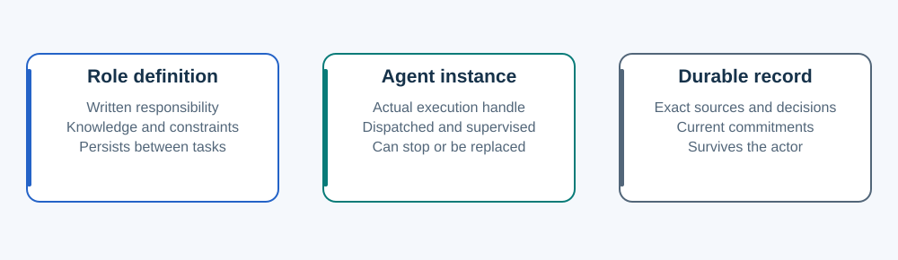

A role is not an agent.
Written responsibilities, live execution and durable evidence do different jobs.

| Moving part | What it means | What it does not mean |
|---|---|---|
| Role definition | Responsibility, applicable knowledge, references and constraints. | A running actor, model choice or permission grant. |
| Agent instance | An actual dispatched Director or worker with a handle and observed status. | A name in a file or a stored activity sentence. |
| Durable record | Exact sources, current commitments, decisions and evidence. | An automatic wakeup or authenticated proof of execution. |
Two generic foundations
Director owns conversation, coordination and acceptance. Worker executes a bounded assignment and returns artifacts, checks and gaps. A specialist or reviewer is a responsibility carried by one of those roles.
Domain knowledge composes with the foundation. A UI worker reads the worker boundaries plus the project's UI instructions. A scoped UI Director uses the same Director foundation plus an explicit coordination overlay.